| 日付 | 2019年3月24日（日） |
|---|---|
| 山域 | 駿河 |
| メンバー | 家族（妻、長女・8歳、長男・5歳） |
| 山行形態 | 子連れ日帰り |
| アクセス | 車 |
| ルート (Map) | 薩埵峠駐車場 (8:31) - (11:21) 浜石岳 (12:26) - (14:39) 薩埵峠駐車場 |
浜石岳は静岡県にある展望の良い山で、前々から行きたいと思っていた。
少々登山道が長いので、今までなかなか行けなかったが、
息子の体力がだいぶついてきたので、絶好の晴天の日を選んで
行ってみることにする。
薩埵峠の駐車場に車を停める。標高80m。
朝早いのに駐車場はもう一杯だ。幸い回転率はそこそこ良い。
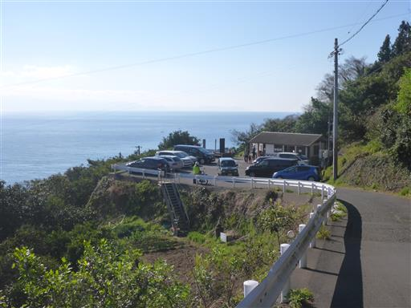
駐車場からは富士山が一望できる。
近くに展望台があるが、ここからでも十分良い景色だ。
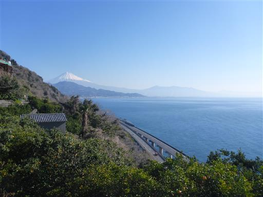
歩いて数分の場所に展望台があるので、登山前に行ってみることにする。
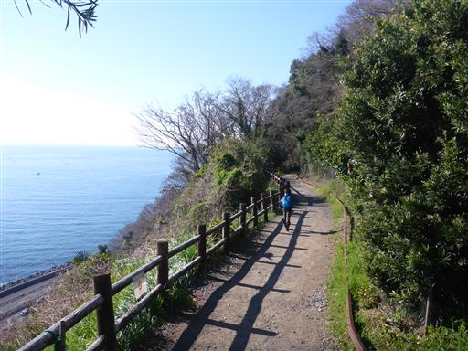
薩埵峠展望台からの景色。歌川広重の絵にも残されている有名な景色だ。
下に見えるのは東名高速、国道1号、東海道線。
山が海まで迫っており、東海道の三大難所とされていた。
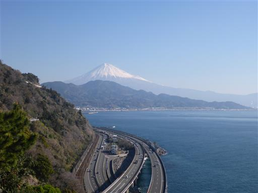
側にシャガの花が咲いている。
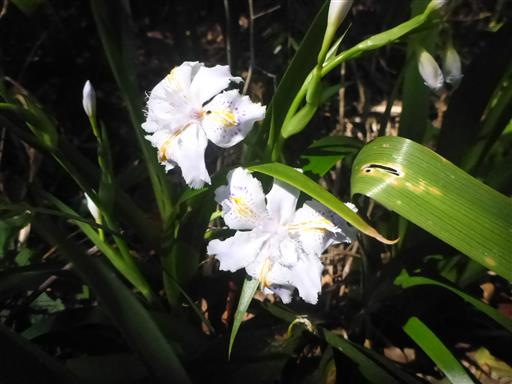
駐車場まで戻ったら登山開始。しばらくは車道を歩く。
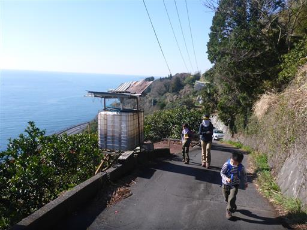
眼下には真っ青な海が広がっている。
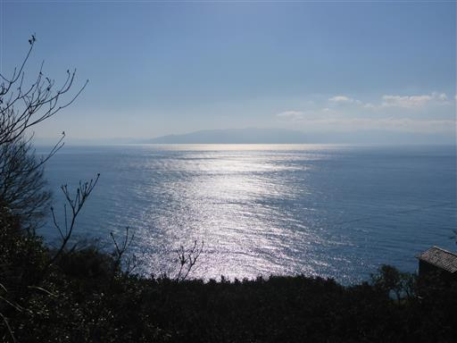
この辺りはミカンの木がたくさん植えられている。
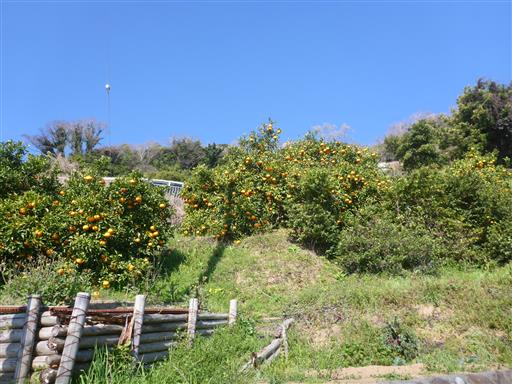
ミカンが落ちて破裂した跡。多くのミカンが落ちていたが収穫はされていないのだろうか？
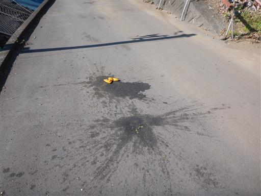
のどかな道を登って行く。作業小屋はあるが民家はあまり見当たらない。
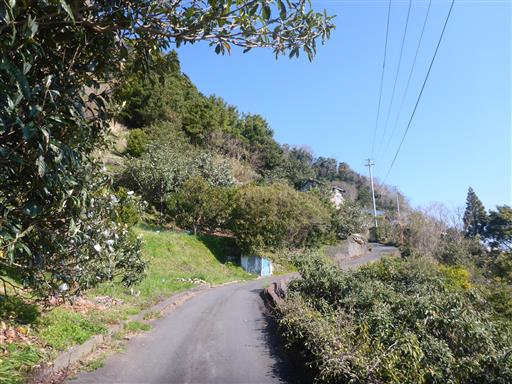
眼下に東名高速道路が見える。陸地が無いので海の上を通っている。
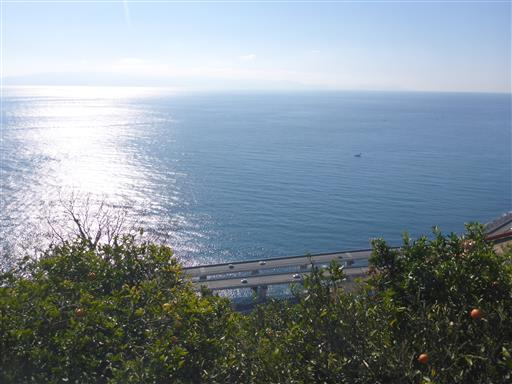
20分ほど歩くと浜石岳の登山口に到着する。
標識には浜石岳まで250分と書かれている。
そんなにかかったら日が暮れてしまうが、ちょっと不安になる。
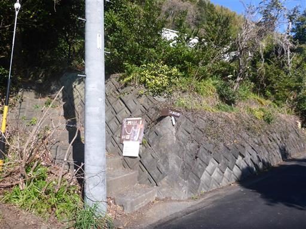
登山道の周辺には打ち捨てられた小屋が多い。
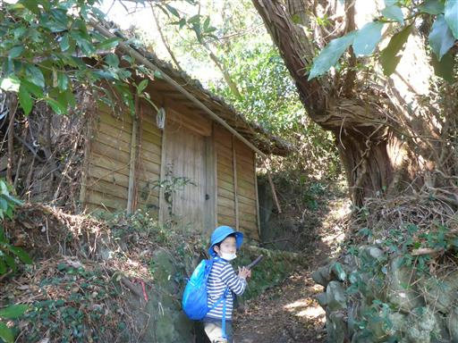
所々にレールが残っている。昔は作業に使われていたのだろう。
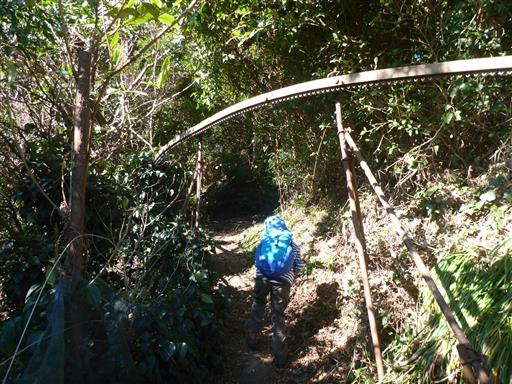
倒木。登山道の入口に倒木注意と書かれていたが、全く危険はない。
息子は下を潜って通過可能だ。
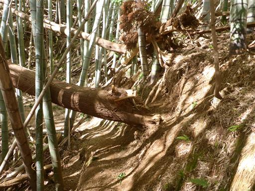
辺り一面竹林になる。長い間放置されているのだろうか？
かなり太い竹が多い。
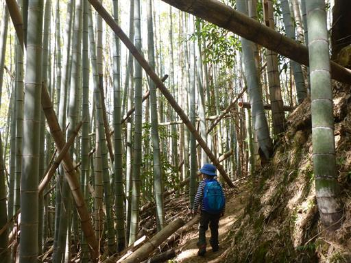
お次は杉林。
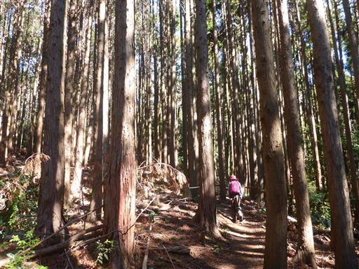
その次は笹薮。目まぐるしく植生が変わる。人為的な影響の結果だろう。
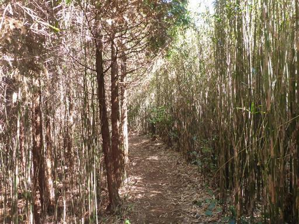
途中の杉の植林地帯で夜のように真っ暗になる。
植林を間伐せずに放置した結果、こうなってしまったのだろうか？
陽の光が届かないので枯れている木も多い。
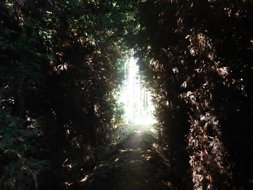
崩壊地。慎重に渡る。
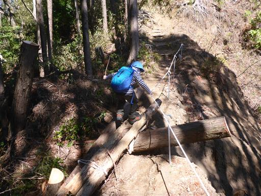
緩やかなアップダウンの繰り返しの登山道だったが、山頂直下は本格的な登りになる。

娘は最後にラストスパート。グイグイ登って行くと山頂が見えてくる。
左手に咲いている桜がきれいだ。
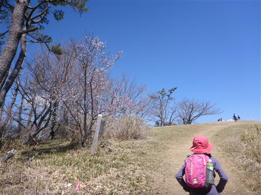
明るく開けた山頂。ちょっとずつ富士山が見えてくる。
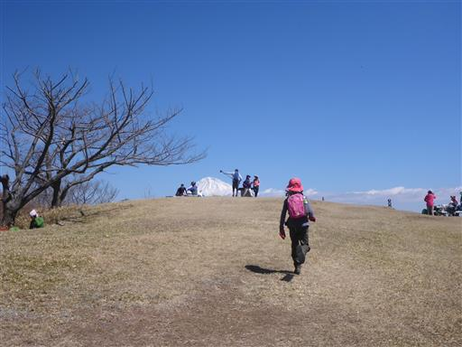
浜石岳山頂に到着。標高707m。
10分ほど遅れて息子も登ってくる。ロングコースで息も絶え絶えだ。
息子は足が短いので、登りの厳しいコースより、長いコースの方が苦手そうだ。
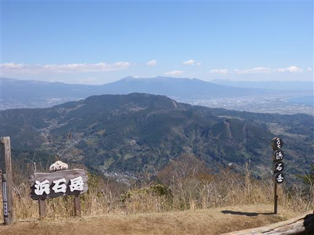
山頂から望む富士山。少し雲がかかってしまったが、それでも素晴らしい景色だ。
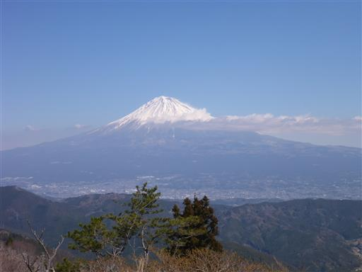
眼下には真っ青な駿河湾。
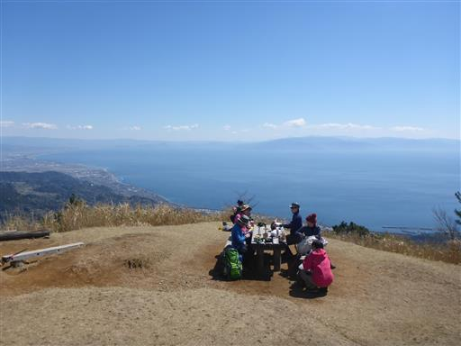
駿河湾の先に見えるのは伊豆半島、半島の先端に見えているのは波勝崎。
駿河湾は水深2500mで日本一深い湾だ。

右に目を振ると三保の松原が見える。5年前に旅行で訪れた場所だ。
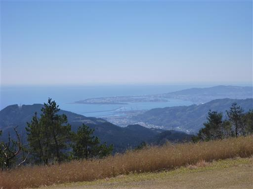
北側には南アルプスが見渡せる。白い山々は前衛の山に隠されてあまり見えないが、
篠井山、身延山や安倍奥の山など懐かしい山々が広がる。
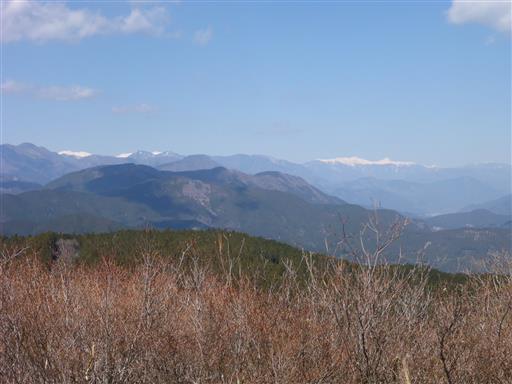
北岳はこちらの方角から見ると格好良い。
非常に景色の良い山頂で、景観も変化に富んでいる。
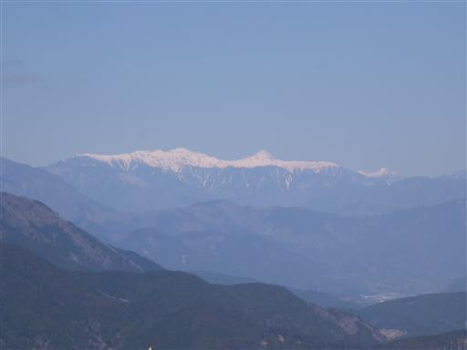
昼食後、息子は蝶を追いかけて遊んでいる。体力はだいぶ回復したようだ。
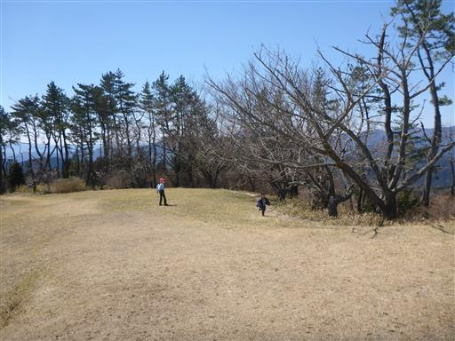
あとはアップダウンのある長い道のりを帰るのみ。
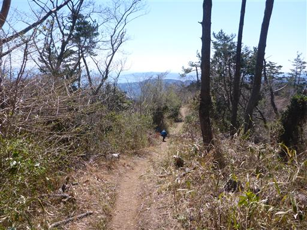
遊びながら帰ると時間が過ぎるのが早い。海が見えてくると下山は近い。
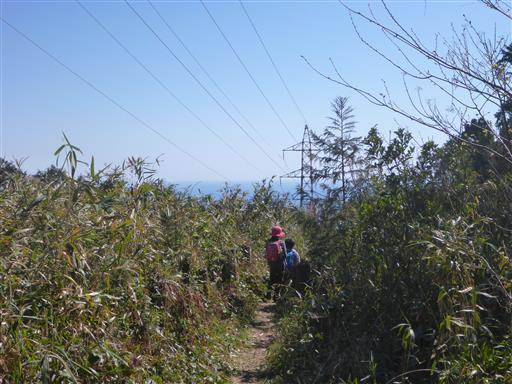
車道に到着。昼を過ぎても、まだまだ海は青い。
息子は両足の脛が痛いと言っている。恐らく歩き過ぎだろう。
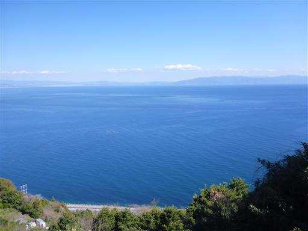
駐車場に戻ってくる。まだ駐車場は多くの車で賑わっている。
浜石岳は登山道に面白みが少なく、多くが植林地帯で花粉が酷かったが、
山頂からの景色は富士山、駿河湾、南アルプスと、素晴らしいの一言だった。